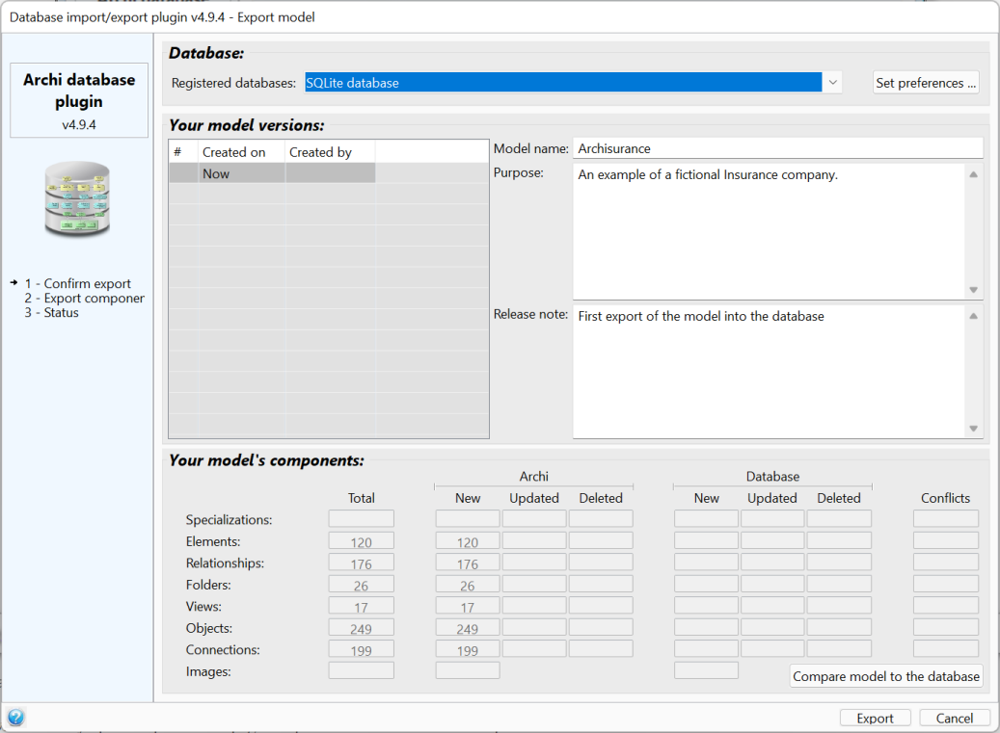

Database structure
This page describes the export of a model in a database.

The graphical interface
As every window of the database plugin, the export window is cutted in 5 zones:
- The left zone shows the plugin's logo and the list of actions.
- The right hand-side of the export window is split in 3 zones:
- The database selection
- The versions of the model
- The model's components
The database selection
This section allows to select the database where the model should be exported. The databases are presented in the order defined on the preference page.
The "set preferences" button allows to directly open the preference page to update the database list or set preferences.
The versions of the model
This section lists the versions of the model that already exist in the database.
The "Now" line represents the version that will be exported in the database. It allows to change the model name and purpose, but also to set a release note.
The model's components
This section lists how many components are present in your model.
The plugin can also show the comparison between the model as it is in Archi and as it is in the database.
To achieve this comparison, the plugin uses the components ID to check if it already exists in the database:
- If the component does not exist in the database:
- The component is assumed to be a new component created by Archi, either manually or loaded from an Archimate file --> The component will be created in the database.
- If the component does exist in the database:
- The plugin calculates the current checksum and retrieves all the other needed checksums and versions from the database:
- The component's "initial version and checksum" that is the latest version in the database that has got the same checksum,
- The component's "latest version and checksum" that is the latest version in the database that is part of the same model,
- The component's "latest database version and checksum" that is the latest version in the database whatever the model the component is in.
- Then it is then possible to compare all the versions and checksums:
- If the "latest version" and the "latest database version" are equal, then the component has not been updated by another model (thus, only the "current checksum" and "initial checksum" are relevant):
- If the "current checksum" and "initial checksum" are identical then the component is in sync with the database --> it does not need to be exported to the database
- If the "current checksum" and "initial checksum" differ then the component has been updated in Archi --> it needs to be exported to the database
- If the "database version" is zero then the component does not exist anymore in the latest version of the model in the database --> it needs to be deleted in Archi
- If the "current checksum" is identical to the "latest database checksum" then the component is in sync with the database --> it does not need to be exported to the database
- If the "initial checksum" differs from the the "current checksum" then the component has been updated in Archi
- If the "initial checksum" differs from the the "database checksum" then the component has been updated in the database
- If the component has been updated in Archi but not in the database --> it needs to be exported to the database
- If the component has been updated in the database but not in Archi --> it needs to be updated in Archi with the values from the database
- If the component has been updated in both Archi and the database:
- If the "current checksum" and "database checksum" are identical, then the same modifications have been done in Archi and in the database --> it does not need to be exported to the database
- If they differ, then the modifications done in Archi and in the database are different --> there is a conflict that needs to be manually resolved by the user
During this check, the plugin also lists all the components that are referenced in the database version of the model but that are not in Archi --> they will be imported from the database.
The plugin shows the number of components in each situation, either automatically if configured in the preferences, either when the user clicks on the "Compare model to the database" button.
The export process
When the user clicks on the "export" button, the plugin:
- Recalculates the status of all the components as it may have changed since the last comparison,
- Imports missing components from the database and update those that have been updated in the database,
- Exports components that have been updated in Archi,
- References all the model components as been pat of the model (even those that do not need to be exported),
- If conflicts are detected, the user is invited to resolve them.
As the export process may take some time, the databases list is replaced by a progress bar to show the export progress.
At the end of the export process, the progress bar is replaced by a status message with a color that highlights the export status (green if successful, yellow in case of error). In case of any error, the export is rolled-back and the database is left untouched. This behavior allows to guarantee the database coherence.
The export to the database cannot be undone, but in case some components have been imported or updated during the export process, the whole import/update can be undone using Archi undo/redo mechanism (menu Undo/Redo or keys ctrl-Z/ctrl-Y).
Conflict resolution